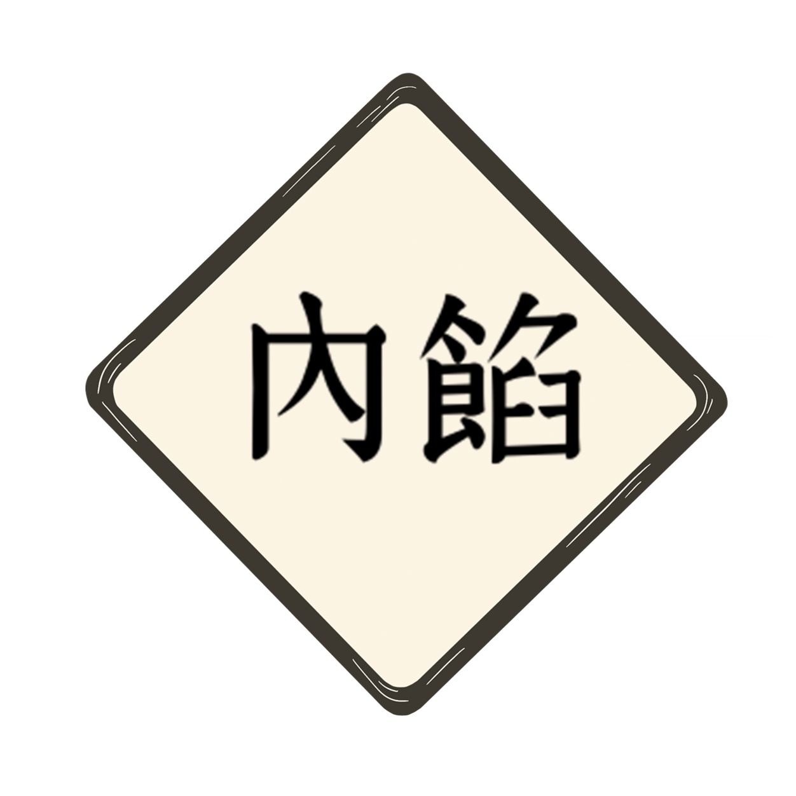
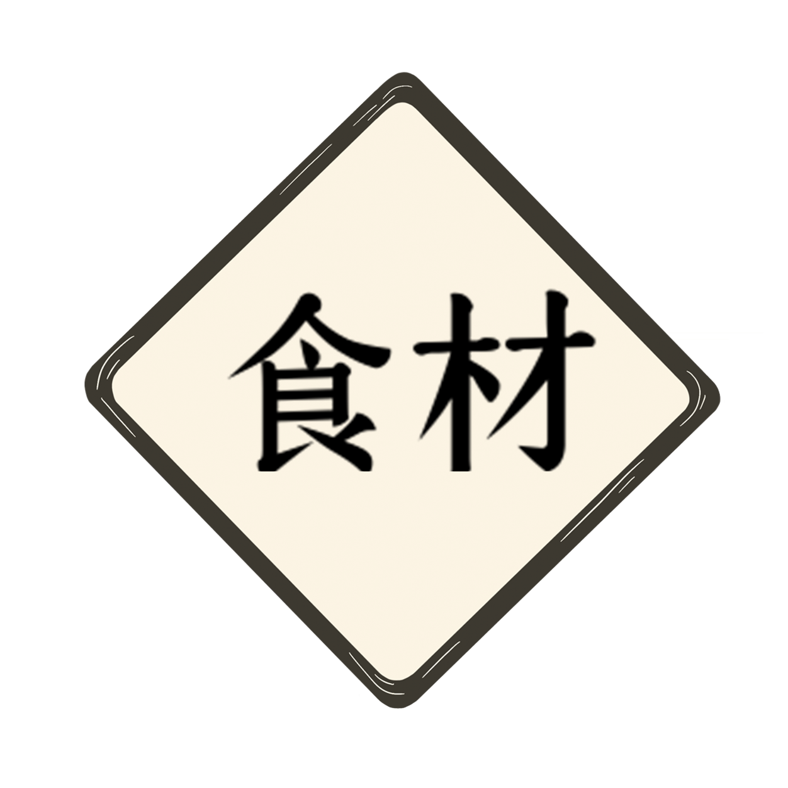

娜美1
娜美是主角蒙其·D·魯夫的第3位夥伴[註 6]。初登場於橘子鎮 （動畫版則是被亞爾麗塔搶劫的某艘客船），原海賊「惡龍海賊團」的測量士
娜美2
娜美是主角蒙其·D·魯夫的第3位夥伴[註 6]。初登場於橘子鎮 （動畫版則是被亞爾麗塔搶劫的某艘客船），原海賊「惡龍海賊團」的測量士
娜美3
娜美是主角蒙其·D·魯夫的第3位夥伴[註 6]。初登場於橘子鎮 （動畫版則是被亞爾麗塔搶劫的某艘客船），原海賊「惡龍海賊團」的測量士
娜美4
娜美是主角蒙其·D·魯夫的第3位夥伴[註 6]。初登場於橘子鎮 （動畫版則是被亞爾麗塔搶劫的某艘客船），原海賊「惡龍海賊團」的測量士